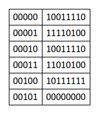

Preprocessor
The preprocessors are the directives, which give instructions to the compiler to preprocess the information before actual compilation starts.
All preprocessor directives begin with #, and only white-space characters may appear before a preprocessor directive on a line. Preprocessor directives are not C++ statements, so they do not end in a semicolon ;.
You already have seen a #include directive in all the examples. This macro is used to include a header file into the source file.
There are number of preprocessor directives supported by C++ like #include, #define, #if, #else, #line, etc.
Compiler
A compiler is a special program that processes statements written in a particular programming language and turns them into machine language or "code" that a computer's processor uses.
Computers understand only one language and that language consists of sets of instructions made of ones and zeros. This computer language is appropriately called machine language.
A particular computer's machine language program that allows a user to input two numbers, adds the two numbers together, and displays the total could include these machine code instructions:
As you can imagine, programming a computer directly in machine language using only ones and zeros is very tedious and error prone. To make programming easier, high level languages have been developed. High level programs also make it easier for programmers to inspect and understand each other's programs easier.
This is a portion of code written in C++ that accomplishes the exact same purpose:
int a, b, sum;
cin >> a;
cin >> b;
sum = a + b;
cout << sum << endl;
Because a computer can only understand machine language and humans wish to write in high level languages high level languages have to be re-written (translated) into machine language at some point. This is done by special programs called compilers, interpreters, or assemblers that are built into the various programming applications.
C++ is designed to be a compiled language, meaning that it is generally translated into machine language that can be understood directly by the system, making the generated program highly efficient. For that, a set of tools are needed, known as the development toolchain, whose core are a compiler and its linker.
Linker
The linker is a program that makes executable files.
The linker resolves linkage issues, such as the use of symbols or identifiers which are defined in one translation unit and are needed from other translation units. Symbols or identifiers which are needed outside a single translation unit have external linkage. In short, the linker's job is to resolve references to undefined symbols by finding out which other object defines a symbol in question, and replacing placeholders with the symbol's address. Of course, the process is more complicated than this; but the basic ideas apply.
The process of connecting or combining object files produced by a compiler with the libraries necessary to make a working executable program (or a library) is called linking.
After the compiler creates one or more object files, then another program called the linker kicks in. The job of the linker is three fold:
- Take all the object files generated by the compiler and combine them into a single executable program.
- In addition to being able to link object files, the linker also is capable of linking library files. A library file is a collection of precompiled code that has been “packaged up” for reuse in other programs.
- The linker makes sure all cross-file dependencies are resolved properly. For example, if you define something in one .cpp file, and then use it in another .cpp file, the linker connects the two together. If the linker is unable to connect a reference to something with its definition, you’ll get a linker error, and the linking process will abort.
Once the linker is finished linking all the object files and libraries (assuming all goes well), you will have an executable file that you can then run.